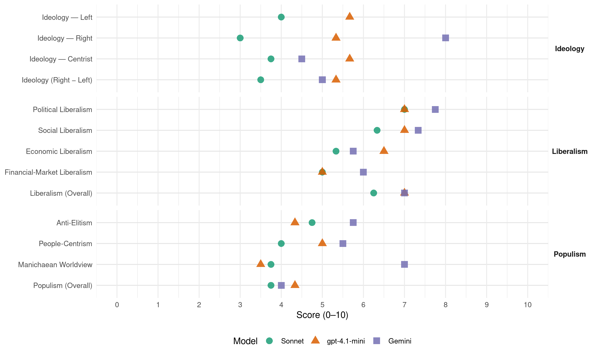

FDF (Belgium, 1991)
manifesto_id 21912_199111
Get full text: This site shows derived annotations and short verbatim quotes only. The full manifesto text is © Manifesto Project / WZB — obtain it via manifesto-project.wzb.eu using the manifesto_id above.
Headline scores
| Dimension | Sonnet | gpt-4.1-mini | Gemini |
|---|---|---|---|
| Populism (Overall) | 3.8 | 4.3 | 4.0 |
| Anti-Elitism | 4.8 | 4.3 | 5.8 |
| People-Centrism | 4.0 | 5.0 | 5.5 |
| Manichaean Worldview | 3.8 | 3.5 | 7.0 |
| Ideology (Right − Left) | 3.5 | 5.3 | 5.0 |
| Liberalism (Overall) | 6.2 | 7.0 | 7.0 |
| Political Liberalism | 7.0 | 7.0 | 7.8 |
| Social Liberalism | 6.3 | 7.0 | 7.3 |
| Economic Liberalism | 5.3 | 6.5 | 5.8 |
| Financial-Market Liberalism | 5.0 | 5.0 | 6.0 |
Evidence per dimension
Economic Liberalism
Gemini · score 7.0 · verified · chunk 1
“en misant sur l’économie de marché”
qui déborde largement le cadre des lois et règlements, en particulier en misant sur l’économie de marché.
Gemini · score 6.0 · verified · chunk 2
“le retour à la liberté contractuelle pour fixer la durée”
Nous proposons le retour à la liberté contractuelle pour fixer la durée de la location et le rejet de
Gemini · score 6.0 · verified · chunk 3
“promouvoir et encourager les entreprises privées”
10. Promouvoir et encourager les entreprises privées. Les PME et les indépendants
Gemini · score 4.0 · verified · chunk 4
“seule initiative des entreprises privées”
soutenue par les pouvoirs publics pour éviter que la seule initiative des entreprises privées n’oriente trop cette recherche
gpt-4.1-mini · score 6.0 · verified · chunk 1
“assainir les finances publiques pour maintenir les services fondamentaux et développer la justice sociale”
Il faut absolument assainir les finances publiques pour maintenir les services fondamentaux et développer la justice sociale. La gestion doit être concrète et prévisionnelle.
gpt-4.1-mini · score 6.0 · verified · chunk 2
“le FDF préfère mener une véritable politique économique alternative capable d’influer sur les structures économiques”
Le FDF réfute l’idée d’une prise en charge totale des coûts environnementaux lorsqu’il s’agit surtout de fuir des responsabilités qui incombent à chacun: pouvoirs publics, agents économiques, citoyen. Dès lors, le FDF préfère mener une véritable politique économique alternative capable d’influer sur les structures économiques sur les structures de production et de recherche.
gpt-4.1-mini · score 6.0 · verified · chunk 3
“Les investissements d’aujourd’hui sont les emplois de demain”
2. Ne pas décourager les investissements. Les investissements d’aujourd’hui sont les emplois de demain. C’est vrai, si on distingue bien les investissements d’extension (de la production) de ceux de rationalisation (modernisation de l’outil, restructuration de l’entreprise qui s’accompagne de perte de l’emploi).
gpt-4.1-mini · score 8.0 · verified · chunk 4
“libre parcours sur les trains, trams, bus et métro”
donner à la carte d’étudiant la valeur d’un libre-parcours sur les trains, trams, bus et métro. b. développer des structures tarifaires intégrées réellement attrayantes et compétitives.
Sonnet · score 6.0 · verified · chunk 1
“en misant sur l’économie de marché”
le F.D.F. appelle à une politique européenne de l’environnement: qui déborde largement le cadre des lois et règlements, en particulier en misant sur l’économie de marché.
Sonnet · score 5.0 · verified · chunk 2
“politique économique alternative capable d’influer”
le FDF préfère mener une véritable politique économique alternative capable d’influer sur les structures économiques sur les structures de production et de recherche
Sonnet · score 5.0 · mixed · chunk 3
“maintenir la plupart des réductions d’impôts”
Il ne faut donc pas les décourager et maintenir la plupart des réductions d’impôts prévues en cas d’investissements. Cependant, il faudrait mettre au point une série de mesures orientant les investissements
Sonnet · score 5.0 · verified · chunk 4
“déduction fiscale sur tous les abonnements”
il s’impose d’accorder la déduction fiscale sur tous les abonnements au transport public
Financial-Market Liberalism
Gemini · score 6.0 · verified · chunk 3
“soutenir les entreprises et la Bourse de Bruxelles”
C’est pourquoi nous proposons, afin de soutenir les entreprises et la Bourse de Bruxelles, de lancer une opération
gpt-4.1-mini · score 5.0 · verified · chunk 3
“Les entreprises ont besoin de financer leur développement, et leur investissement”
4. Permettre aux entreprises de financer leur développement - Sauver la Bourse de Bruxelles -. Les entreprises ont besoin de financer leur développement, et leur investissement. Elles disposent de plusieurs moyens: sur fonds propres, par emprunts ou par le lancement d’actions.
Sonnet · score 5.0 · verified · chunk 1
“bon système monétaire international”
les rapports harmonieux entre eux passent inévitablement par: 1. l’élaboration d’un bon système monétaire international, c’est-à-dire équilibré et stable.
Sonnet · score 5.0 · verified · chunk 2
“bon système monétaire international”
les rapports harmonieux entre eux passent inévitablement par: 1. l’élaboration d’un bon système monétaire international, c’est-à-dire équilibré et stable.
Sonnet · score 5.0 · mixed · chunk 3
“soutenir les entreprises et la Bourse de Bruxelles”
nous proposons, afin de soutenir les entreprises et la Bourse de Bruxelles, de lancer une opération permettant aux entreprises d’émettre des actions auxquelles sont attachés un avantage fiscal
Political Liberalism
Gemini · score 8.0 · verified · chunk 1
“respect des exigences de la démocratie”
les institutions fabriquées depuis 20 ans, sous la pression flamande sort loin de respecter les exigences de la démocratie.
Gemini · score 8.0 · verified · chunk 2
“L’organisation judiciaire constitue un élément essentiel dans une société démocratique”
L’organisation de la justice. L’organisation judiciaire constitue un élément essentiel dans une société démocratique. La Justice doit, d’une part
Gemini · score 8.0 · verified · chunk 3
“liberté de la presse, garantie par l’article 18”
demande que la liberté de la presse, garantie par l’article 18 de la Constitution, soit étendue
Gemini · score 7.0 · verified · chunk 4
“droit fondamental de la personne humaine”
ailleurs, c’est parce qu’il y va d’un droit fondamental de la personne humaine. Le défi du logement, à Bruxelles
gpt-4.1-mini · score 7.0 · verified · chunk 1
“respect des droits de l’Homme”
La démocratie implique le respect des droits de l’Homme, et cela comprend notamment : - Les droits culturels et politiques, des personnes et des minorités.
gpt-4.1-mini · score 7.0 · verified · chunk 2
“Le bon fonctionnement de la Démocratie suppose que les responsables politiques soient respectables”
Moralité et Démocratie. Le bon fonctionnement de la Démocratie suppose que les responsables politiques soient respectables et dès lors respectés.
gpt-4.1-mini · score 7.0 · verified · chunk 3
“La liberté de la presse est une liberté constitutionnelle”
Aide à la presse. La liberté de la presse est une liberté constitutionnelle. Encore faut-il que cette liberté soit réelle c.à.d. que les médias, en particulier, la presse écrite, soient dans des conditions économiques et financières qui leur permettent d’être rentables et de garder leur qualité et leur indépendance.
gpt-4.1-mini · score 7.0 · verified · chunk 4
“le respect des règles légales”
Le F.D.F, dans le respect des règles légales recommande une politique de concertation des efforts de recherche raccompagnée d’évaluation méthodique et systématique des résultats.
Sonnet · score 8.0 · verified · chunk 1
“respect du suffrage universel”
La démocratie implique le respect des droits de l’Homme, et cela comprend notamment: Les droits culturels et politiques, des personnes et des minorités. Le respect du pluralisme dans la société. Le respect du suffrage universel.
Sonnet · score 7.0 · verified · chunk 2
“bon fonctionnement de la Démocratie”
Moralité et Démocratie. Le bon fonctionnement de la Démocratie suppose que les responsables politiques soient respectables et dès lors respectés.
Sonnet · score 7.0 · verified · chunk 3
“la liberté de la presse, garantie par l’article 18”
le F.D.F, demande que la liberté de la presse, garantie par l’article 18 de la Constitution, soit étendue aux moyens d’information, autres que la seule presse écrite
Sonnet · score 6.0 · verified · chunk 4
“clarifier la loi établissant les compétences régionales”
Clarifier la loi établissant les compétences régionales et élargir celle-ci en vue de garantir l’efficacité des politiques.
Liberalism (Overall)
Gemini · score 8.0 · verified · chunk 1
“respect des droits de l’Homme”
La démocratie- implique le respect des droits de l’Homme, et cela comprend notamment : - Les droits culturels et politiques
Gemini · score 7.0 · verified · chunk 2
“L’organisation judiciaire constitue un élément essentiel dans une société démocratique”
L’organisation de la justice. L’organisation judiciaire constitue un élément essentiel dans une société démocratique. La Justice doit, d’une part
Gemini · score 7.0 · verified · chunk 3
“liberté de la presse, garantie par l’article 18”
demande que la liberté de la presse, garantie par l’article 18 de la Constitution, soit étendue
Gemini · score 6.0 · verified · chunk 4
“droit fondamental de la personne humaine”
ailleurs, c’est parce qu’il y va d’un droit fondamental de la personne humaine. Le défi du logement, à Bruxelles
gpt-4.1-mini · score 7.0 · verified · chunk 1
“respect des droits de l’Homme”
La démocratie implique le respect des droits de l’Homme, et cela comprend notamment : - Les droits culturels et politiques, des personnes et des minorités.
gpt-4.1-mini · score 7.0 · verified · chunk 2
“Le bon fonctionnement de la Démocratie suppose que les responsables politiques soient respectables”
Moralité et Démocratie. Le bon fonctionnement de la Démocratie suppose que les responsables politiques soient respectables et dès lors respectés.
gpt-4.1-mini · score 6.0 · verified · chunk 3
“La liberté de la presse est une liberté constitutionnelle”
Aide à la presse. La liberté de la presse est une liberté constitutionnelle. Encore faut-il que cette liberté soit réelle c.à.d. que les médias, en particulier, la presse écrite, soient dans des conditions économiques et financières qui leur permettent d’être rentables et de garder leur qualité et leur indépendance.
gpt-4.1-mini · score 8.0 · verified · chunk 4
“donner à la carte d’étudiant la valeur d’un libre-parcours sur les trains, trams, bus et métro”
donner à la carte d’étudiant la valeur d’un libre-parcours sur les trains, trams, bus et métro. b. développer des structures tarifaires intégrées réellement attrayantes et compétitives.
Sonnet · score 7.0 · verified · chunk 1
“respect des droits de l’Homme”
La démocratie implique le respect des droits de l’Homme, et cela comprend notamment: Les droits culturels et politiques, des personnes et des minorités.
Sonnet · score 6.0 · verified · chunk 2
“liberté de jouir d’un environnement sain”
Le FDF, parti des libertés, entend poursuivre son action dans un domaine qui entre certainement dans le champ des libertés fondamentales: liberté de jouir d’un environnement sain, préservé ou réhabilité.
Sonnet · score 6.0 · verified · chunk 3
“la liberté de la presse, garantie par l’article 18”
le F.D.F, demande que la liberté de la presse, garantie par l’article 18 de la Constitution, soit étendue aux moyens d’information, autres que la seule presse écrite
Sonnet · score 6.0 · verified · chunk 4
“clarifier la loi établissant les compétences régionales”
Clarifier la loi établissant les compétences régionales et élargir celle-ci en vue de garantir l’efficacité des politiques.
Anti-Elitism
Gemini · score 8.0 · verified · chunk 1
“les partis traditionnels au pouvoir”
En 1S80 tout d’abord, et de nouveau en 1988-89, les partis traditionnels au pouvoir (P.R.L-P.S.C. et P.S.-P.S.C.) ont gravement trompé 1’opinion publique.
Gemini · score 4.0 · verified · chunk 2
“la politisation excessive de la fonction publique”
Ceci est dû dans une large mesure à la politisation excessive de la fonction publique, mais également aux
Gemini · score 6.0 · verified · chunk 3
“MM. Dehaene et Martens n’ont jamais voulu”
Il faut savoir que MM. Dehaene et Martens n’ont jamais voulu prendre des mesures sérieuses
Gemini · score 5.0 · verified · chunk 4
“imposer des infrastructures voulues par les lobbies”
Avant d’opérer des investissements, l’Etat ne doit plus chercher à imposer des infrastructures voulues par les lobbies du béton qui ont pour effet de ravager
gpt-4.1-mini · score 6.0 · verified · chunk 1
“les partis traditionnels au pouvoir (P.R.L-P.S.C. et P.S.-P.S.C.) ont gravement trompé 1’opinion publique”
En 1S80 tout d’abord, et de nouveau en 1988-89, les partis traditionnels au pouvoir (P.R.L-P.S.C. et P.S.-P.S.C.) ont gravement trompé 1’opinion publique. C’est la raison pour laquelle celle-ci est désemparée aujourd’hui.
gpt-4.1-mini · score 4.0 · verified · chunk 2
“le mal réside dans sa structure actuelle qui a souffert de dosages linguistiques”
Indubitablement, le mal réside dans sa structure actuelle qui a souffert de dosages linguistiques ne tenant aucun compte de la compétence des agents ou des affaires à traiter.
gpt-4.1-mini · score 3.0 · verified · chunk 3
“le FDF affirme qu’au cas où un accident devrait avoir lieu, il mettrait en cause personnellement les responsables politiques concernés”
Pourquoi ces dispositions ne sont-elles pas respectées lorsqu’on sait que du seul point de vue de la sécurité, ce survol de zones habitées représente déjà une véritable folie? Le FDF affirme qu’au cas où un accident devrait avoir lieu, il mettrait en cause personnellement les responsables politiques concernés! Les techniques d’approches et d’envol doivent également être entièrement réexaminées
Sonnet · score 6.0 · verified · chunk 1
“partis traditionnels au pouvoir…ont gravement trompé l’opinion publique”
En 1S80 tout d’abord, et de nouveau en 1988-89, les partis traditionnels au pouvoir (P.R.L-P.S.C. et P.S.-P.S.C.) ont gravement trompé 1’opinion publique.
Sonnet · score 4.0 · verified · chunk 2
“l’administration a été artificiellement flamandisée”
le mal réside dans sa structure actuelle qui a souffert de dosages linguistiques ne tenant aucun compte de la compétence des agents… l’administration a été artificiellement flamandisée sans tenir compte des nécessités réelles
Sonnet · score 5.0 · verified · chunk 3
“MM. Dehaene et Martens n’ont jamais voulu prendre des mesures sérieuses”
Le FDF affirme qu’au cas où un accident devrait avoir lieu, il mettrait en cause personnellement les responsables politiques concernés! … MM. Dehaene et Martens n’ont jamais voulu prendre des mesures sérieuses d’étude et de réduction du bruit malgré les appels incessants du FDF
Sonnet · score 4.0 · verified · chunk 4
“la Flandre abuse de sa majorité numérique”
Une fois encore, la Flandre abuse de sa majorité numérique pour se tailler la part du lion et des investissements
Ideology — Centrist
Gemini · score 5.0 · verified · chunk 3
“mieux être de toute la population”
il entend œuvrer au mieux être de toute la population. Son combat à Bruxelles
Gemini · score 4.0 · verified · chunk 4
“imposer des infrastructures voulues par les lobbies”
Avant d’opérer des investissements, l’Etat ne doit plus chercher à imposer des infrastructures voulues par les lobbies du béton qui ont pour effet de ravager
gpt-4.1-mini · score 6.0 · verified · chunk 1
“les partis francophones qui ont gouverné avec lui et contribué à développer ainsi son crédit”
Malheureusement, Wilfried Martens, cheval de Troie du C.V.P., vient à Bruxelles pour abuser davantage encore les francophones, flamandiser Bruxelles, et tenter de justifier les injustices des institutions actuelles. Les partis francophones qui ont gouverné avec lui et contribué à développer ainsi son crédit, alors qu’en 1987 le P.S. avait dit “Plus jamais Martens” sont responsables de ce qui risque d’arriver.
gpt-4.1-mini · score 6.0 · verified · chunk 2
“le principe de l’interdépendance entre nord et sud étant clairement affirmé”
Le principe de l’interdépendance entre nord et sud étant clairement affirmé, les rapports harmonieux entre eux passent inévitablement par:
gpt-4.1-mini · score 5.0 · verified · chunk 3
“le FDF, réaffirme sa volonté de promouvoir et de défendre, plus que jamais, la langue et la culture françaises”
Tous les francophones de Bruxelles, de sa périphérie et de Wallonie se rassemblent au sein d’une institution: la Communauté française. Le F.D.F. réaffirme sa volonté de promouvoir et de défendre, plus que jamais, la langue et la culture françaises.
Sonnet · score 5.0 · verified · chunk 1
“pluraliste et pragmatique”
l’objectif est bien de jeter les bases d’un nouveau parti aux idées larges, pluraliste et pragmatique, pour l’ensemble de la communauté française.
Sonnet · score 3.0 · verified · chunk 2
“parti des libertés”
Le FDF, parti des libertés, entend poursuivre son action dans un domaine qui entre certainement dans le champ des libertés fondamentales
Sonnet · score 3.0 · verified · chunk 3
“au mieux être de toute la population”
le FDF a su s’adjoindre le concours de spécialistes avec lesquels il entend œuvrer au mieux être de toute la population. Son combat à Bruxelles en témoigne
Sonnet · score 4.0 · verified · chunk 4
“un parti fédéraliste comme le F.D.F”
Un parti fédéraliste comme le F.D.F, est persuadé que la décentralisation (dans ce cas: la régionalisation) du transport public est un atout
Ideology — Left
gpt-4.1-mini · score 6.0 · verified · chunk 1
“assainir les finances publiques pour maintenir les services fondamentaux et développer la justice sociale”
Il faut absolument assainir les finances publiques pour maintenir les services fondamentaux et développer la justice sociale. La gestion doit être concrète et prévisionnelle.
gpt-4.1-mini · score 5.0 · verified · chunk 2
“le processus actuel de mondialisation des économies, des communications”
Le processus actuel de mondialisation des économies, des communications et des modernisations technologiques confine chaque jour le tiers-monde dans une marginalisation intolérable.
gpt-4.1-mini · score 6.0 · verified · chunk 3
“le FDF, pose un regard sur la situation actuelle. Les années noires de la crise économique sont derrière nous. Mais cette crise a modifié les priorités de nos gouvernements. La priorité néo-libérale d’assainissement de l’économie économique a relégué au second plan le rôle social de l’Etat”
A. SECURITE SOCIALE. Le F.D.F, pose un regard sur la situation actuelle. Les années noires de la crise économique sont derrière nous. Mais cette crise a modifié les priorités de nos gouvernements. La priorité néo-libérale d’assainissement de l’économie économique a relégué au second plan le rôle social de l’Etat et affaibli l’ensemble du secteur non-marchand.
Sonnet · score 3.0 · verified · chunk 1
“développer la justice sociale”
Il faut absolument assainir les finances publiques pour maintenir les services fondamentaux et développer la justice sociale.
Sonnet · score 4.0 · verified · chunk 2
“Alléger la dette du tiers-monde”
7. Alléger la dette du tiers-monde. La crise de l’endettement d’un grand nombre de pays pauvres doit être rencontrée par des réductions de la dette et des aménagements dans le processus de remboursement.
Sonnet · score 6.0 · verified · chunk 3
“priorité néo-libérale d’assainissement de l’économie”
La priorité néo-libérale d’assainissement de l’économie économique a relégué au second plan le rôle social de l’Etat et affaibli l’ensemble du secteur non-marchand.
Sonnet · score 3.0 · verified · chunk 4
“lobbies du béton qui ont pour effet”
l’Etat ne doit plus chercher à imposer des infrastructures voulues par les lobbies du béton qui ont pour effet de ravager et tuer les quartiers
Ideology (Right − Left)
Gemini · score 8.0 · verified · chunk 1
“revendications issues du nationalisme”
Les partis flamands parce que, poursuivant leurs revendications issues du nationalisme du XIX siècle et animés par un désir de revanche anti-francophone
Gemini · score 4.0 · verified · chunk 3
“mieux être de toute la population”
il entend œuvrer au mieux être de toute la population. Son combat à Bruxelles
Gemini · score 3.0 · verified · chunk 4
“imposer des infrastructures voulues par les lobbies”
Avant d’opérer des investissements, l’Etat ne doit plus chercher à imposer des infrastructures voulues par les lobbies du béton qui ont pour effet de ravager
gpt-4.1-mini · score 6.0 · verified · chunk 1
“les partis traditionnels au pouvoir (P.R.L-P.S.C. et P.S.-P.S.C.) ont gravement trompé 1’opinion publique”
En 1S80 tout d’abord, et de nouveau en 1988-89, les partis traditionnels au pouvoir (P.R.L-P.S.C. et P.S.-P.S.C.) ont gravement trompé 1’opinion publique. C’est la raison pour laquelle celle-ci est désemparée aujourd’hui.
gpt-4.1-mini · score 5.0 · verified · chunk 2
“le processus actuel de mondialisation des économies, des communications”
Le processus actuel de mondialisation des économies, des communications et des modernisations technologiques confine chaque jour le tiers-monde dans une marginalisation intolérable.
gpt-4.1-mini · score 5.0 · verified · chunk 3
“le FDF, pose un regard sur la situation actuelle. Les années noires de la crise économique sont derrière nous. Mais cette crise a modifié les priorités de nos gouvernements. La priorité néo-libérale d’assainissement de l’économie économique a relégué au second plan le rôle social de l’Etat”
A. SECURITE SOCIALE. Le F.D.F, pose un regard sur la situation actuelle. Les années noires de la crise économique sont derrière nous. Mais cette crise a modifié les priorités de nos gouvernements. La priorité néo-libérale d’assainissement de l’économie économique a relégué au second plan le rôle social de l’Etat et affaibli l’ensemble du secteur non-marchand.
Sonnet · score 4.0 · verified · chunk 1
“alternative à la particratie traditionnelle”
ces principes doivent fonder, l’alternative à la particratie traditionnelle et aux scandales répétés, L’ALTERNATIVE CREDIBLE que la plupart des Belges appellent de tous leurs vœux.
Sonnet · score 3.0 · verified · chunk 2
“lutte contre la misère et la faim”
c’est au remplacement d’agents francophones par des néerlandophones et non à la lutte contre la misère et la faim que l’on a préféré donner la priorité
Sonnet · score 4.0 · verified · chunk 3
“priorité néo-libérale d’assainissement de l’économie”
La priorité néo-libérale d’assainissement de l’économie économique a relégué au second plan le rôle social de l’Etat et affaibli l’ensemble du secteur non-marchand.
Sonnet · score 3.0 · verified · chunk 4
“la Flandre abuse de sa majorité numérique”
Une fois encore, la Flandre abuse de sa majorité numérique pour se tailler la part du lion et des investissements
Ideology — Right
Gemini · score 8.0 · verified · chunk 1
“revendications issues du nationalisme”
Les partis flamands parce que, poursuivant leurs revendications issues du nationalisme du XIX siècle et animés par un désir de revanche anti-francophone
gpt-4.1-mini · score 7.0 · verified · chunk 1
“les partis flamands parce que, poursuivant leurs revendications issues du nationalisme du XIX siècle”
Les partis flamands parce que, poursuivant leurs revendications issues du nationalisme du XIX siècle et animés par un désir de revanche anti-francophone, ils n’en finissent pas de vouloir toujours plus pour la Flandre… sans avouer clairement que leur rêve est l’indépendance de la Flandre après avoir annexé Bruxelles.
gpt-4.1-mini · score 4.0 · verified · chunk 2
“le F.D.F, estime que notre société ne peut accepter le développement en Belgique du Fondamentalisme musulman”
Dans cette optique, le F.D.F, estime que notre société ne peut accepter le développement en Belgique du Fondamentalisme musulman, expression du fanatisme et d’un repli sur soi opposé à toute intégration.
gpt-4.1-mini · score 5.0 · verified · chunk 3
“la langue véhiculaire de Bruxelles doit être et rester le français; la culture de Bruxelles doit rester la culture française”
Bruxelles est la capitale de la Communauté française, le lieu où se développent à foison de multiples activités culturelles. Bruxelles sera demain la capitale de l’Europe, mais ce nouveau rôle ne doit pas avoir pour conséquence de ravaler le français au rang de langue régionale. La langue véhiculaire de Bruxelles doit être et rester le français; la culture de Bruxelles doit rester la culture française.
Sonnet · score 4.0 · verified · chunk 1
“nationalisme flamand”
Les institutions actuelles n’ont donc rien à voir avec un ‘fédéralisme d’union’; elles sont viciées par l’empreinte du nationalisme flamand.
Sonnet · score 3.0 · verified · chunk 2
“caractère essentiellement francophone de Bruxelles”
le respect de l’identité culturelle des immigrés ne peut en aucun cas aboutir à mettre en cause le caractère essentiellement francophone de Bruxelles ni à en faire une ville charabia
Sonnet · score 3.0 · verified · chunk 3
“la langue et la culture françaises”
Le F.D.F. réaffirme sa volonté de promouvoir et de défendre, plus que jamais, la langue et la culture françaises.
Sonnet · score 2.0 · verified · chunk 4
“équilibres linguistiques doivent être respectées”
Toutefois les équilibres linguistiques doivent être respectées au sein des structures et vis-à-vis du public
Manichaean Worldview
Gemini · score 7.0 · verified · chunk 1
“ont gravement trompé 1’opinion publique”
les partis traditionnels au pouvoir (P.R.L-P.S.C. et P.S.-P.S.C.) ont gravement trompé 1’opinion publique. C’est la raison pour laquelle celle-ci est désemparée
gpt-4.1-mini · score 5.0 · mixed · chunk 1
“volonté de puissance au mépris de la démocratie”
Tout refus sur ce plan ne s’explique que par la volonté de puissance au mépris de la démocratie, et par le désir de partis politiques d’occuper le pouvoir à n’importe quel prix.
gpt-4.1-mini · score 3.0 · verified · chunk 2
“le FDF, considère que l’ordre public doit être maintenu”
Le F.D.F, estime, d’une façon générale, que l’ordre public doit être maintenu. Il n’est pas admissible que dans certains quartiers la police et la gendarmerie y renoncent.
gpt-4.1-mini · score 4.0 · verified · chunk 3
“le FDF affirme qu’au cas où un accident devrait avoir lieu, il mettrait en cause personnellement les responsables politiques concernés”
Pourquoi ces dispositions ne sont-elles pas respectées lorsqu’on sait que du seul point de vue de la sécurité, ce survol de zones habitées représente déjà une véritable folie? Le FDF affirme qu’au cas où un accident devrait avoir lieu, il mettrait en cause personnellement les responsables politiques concernés! Les techniques d’approches et d’envol doivent également être entièrement réexaminées
Sonnet · score 5.0 · verified · chunk 1
“désir de revanche anti-francophone”
Les partis flamands parce que, poursuivant leurs revendications issues du nationalisme du XIX siècle et animés par un désir de revanche anti-francophone, ils n’en finissent pas de vouloir toujours plus pour la Flandre
Sonnet · score 3.0 · verified · chunk 2
“c’est au remplacement d’agents francophones”
c’est au remplacement d’agents francophones par des néerlandophones et non à la lutte contre la misère et la faim que l’on a préféré donner la priorité
Sonnet · score 4.0 · verified · chunk 3
“la Flandre abuse de sa majorité numérique”
Une fois encore, la Flandre abuse de sa majorité numérique pour se tailler la part du lion et des investissements et ceci afin de privilégier ses intérêts économiques
Sonnet · score 3.0 · verified · chunk 4
“Le P.S. et le P.S.C. n’ont pu empêcher”
Le P.S. et le P.S.C. n’ont pu empêcher les flamands d’être les gagnants du bras de fer. Tout au plus ont-ils pu récolter quelques miettes du festin.
People-Centrism
Gemini · score 6.0 · verified · chunk 1
“aspirations de larges couches de la population”
décidés à poursuivre les objectifs communs et résolus à répondre à des aspirations de larges couches de la population wallonne, que les autres partis
Gemini · score 5.0 · verified · chunk 3
“mieux être de toute la population”
il entend œuvrer au mieux être de toute la population. Son combat à Bruxelles
gpt-4.1-mini · score 7.0 · verified · chunk 1
“l’entente de tous les francophones (Wallons et Bruxellois) est plus malaisée à réaliser”
Dans le dialogue politique au niveau fédéral et plus généralement dans les rapports entre les deux grandes communautés, l’entente de tous les francophones (Wallons et Bruxellois) est plus malaisée à réaliser en raison de cette séparation institutionnelle.
gpt-4.1-mini · score 3.0 · verified · chunk 2
“le principe de l’interdépendance entre nord et sud étant clairement affirmé”
Le principe de l’interdépendance entre nord et sud étant clairement affirmé, les rapports harmonieux entre eux passent inévitablement par:
gpt-4.1-mini · score 5.0 · verified · chunk 3
“la population! Sur le problème plus particulier du bruit des avions, le FDF entend réaffirmer son opposition”
…les nuisances qui résulteront de l’arrivée du TGV à Bruxelles et de la mise en service d’un RER ne seront jamais acceptées par la population! Sur le problème plus particulier du bruit des avions, le FDF entend réaffirmer son opposition aux énormes investissements actuellement en cours sans qu’aucune étude d’impact n’ait été réalisée!
Sonnet · score 5.0 · verified · chunk 1
“l’alternative à la particratie traditionnelle”
ces principes doivent fonder, l’alternative à la particratie traditionnelle et aux scandales répétés, L’ALTERNATIVE CREDIBLE que la plupart des Belges appellent de tous leurs vœux.
Sonnet · score 4.0 · verified · chunk 2
“association très étroite des populations concernées”
lutter contre le sous-développement, la misère, l’analphabétisme et l’exclusion sociale, en veillant par ailleurs à assurer le succès des politiques de développement par une association très étroite des populations concernées
Sonnet · score 4.0 · verified · chunk 3
“au mieux être de toute la population”
Dans sa politique résolument tournée vers l’avenir, le FDF a su s’adjoindre le concours de spécialistes avec lesquels il entend œuvrer au mieux être de toute la population.
Sonnet · score 3.0 · verified · chunk 4
“les besoins des usagers et des solutions”
une meilleure connaissance des besoins des usagers et des solutions susceptibles de les rencontrer
Populism (Overall)
Gemini · score 7.0 · verified · chunk 1
“l’alternative à la particratie traditionnelle”
Mieux qu’un programme détaillé, ces principes doivent fonder, l’alternative à la particratie traditionnelle et aux scandales répétés
Gemini · score 2.0 · verified · chunk 2
“la politisation excessive de la fonction publique”
Ceci est dû dans une large mesure à la politisation excessive de la fonction publique, mais également aux
Gemini · score 4.0 · verified · chunk 3
“MM. Dehaene et Martens n’ont jamais voulu”
Il faut savoir que MM. Dehaene et Martens n’ont jamais voulu prendre des mesures sérieuses
Gemini · score 3.0 · verified · chunk 4
“imposer des infrastructures voulues par les lobbies”
Avant d’opérer des investissements, l’Etat ne doit plus chercher à imposer des infrastructures voulues par les lobbies du béton qui ont pour effet de ravager
gpt-4.1-mini · score 6.0 · verified · chunk 1
“les partis traditionnels au pouvoir (P.R.L-P.S.C. et P.S.-P.S.C.) ont gravement trompé 1’opinion publique”
En 1S80 tout d’abord, et de nouveau en 1988-89, les partis traditionnels au pouvoir (P.R.L-P.S.C. et P.S.-P.S.C.) ont gravement trompé 1’opinion publique. C’est la raison pour laquelle celle-ci est désemparée aujourd’hui.
gpt-4.1-mini · score 3.0 · verified · chunk 2
“le mal réside dans sa structure actuelle qui a souffert de dosages linguistiques”
Indubitablement, le mal réside dans sa structure actuelle qui a souffert de dosages linguistiques ne tenant aucun compte de la compétence des agents ou des affaires à traiter.
gpt-4.1-mini · score 4.0 · verified · chunk 3
“le FDF affirme qu’au cas où un accident devrait avoir lieu, il mettrait en cause personnellement les responsables politiques concernés”
Pourquoi ces dispositions ne sont-elles pas respectées lorsqu’on sait que du seul point de vue de la sécurité, ce survol de zones habitées représente déjà une véritable folie? Le FDF affirme qu’au cas où un accident devrait avoir lieu, il mettrait en cause personnellement les responsables politiques concernés! Les techniques d’approches et d’envol doivent également être entièrement réexaminées
Sonnet · score 5.0 · verified · chunk 1
“aux scandales répétés, L’ALTERNATIVE CREDIBLE”
ces principes doivent fonder, l’alternative à la particratie traditionnelle et aux scandales répétés, L’ALTERNATIVE CREDIBLE que la plupart des Belges appellent de tous leurs vœux.
Sonnet · score 3.0 · verified · chunk 2
“gesticule mais il n’agit pas”
La décision de l’actuel gouvernement de prélever pour cela une somme annuelle de 200 millions sur les bénéfices de la Loterie Nationale est ridicule et dérisoire. Une fois de plus, ce gouvernement gesticule mais il n’agit pas.
Sonnet · score 4.0 · verified · chunk 3
“MM. Dehaene et Martens n’ont jamais voulu prendre des mesures sérieuses”
MM. Dehaene et Martens n’ont jamais voulu prendre des mesures sérieuses d’étude et de réduction du bruit malgré les appels incessants du FDF et du Secrétaire d’Etat D. GOSUIN
Sonnet · score 3.0 · verified · chunk 4
“la Flandre abuse de sa majorité numérique”
Une fois encore, la Flandre abuse de sa majorité numérique pour se tailler la part du lion et des investissements
Social Liberalism